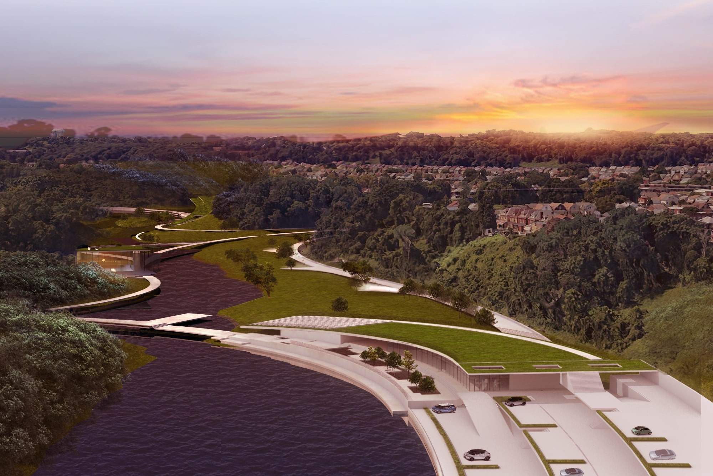
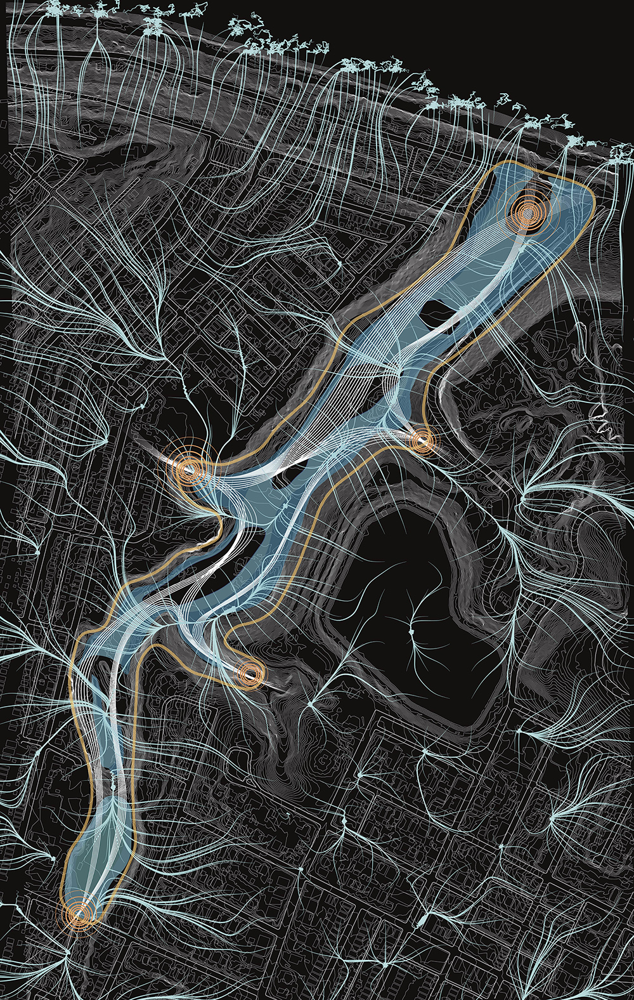
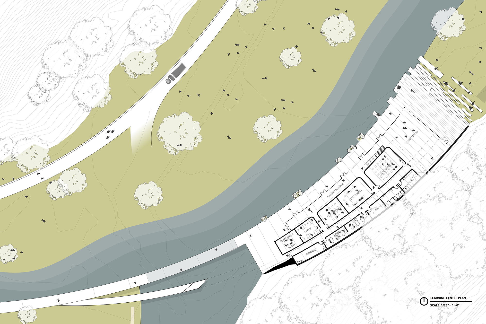
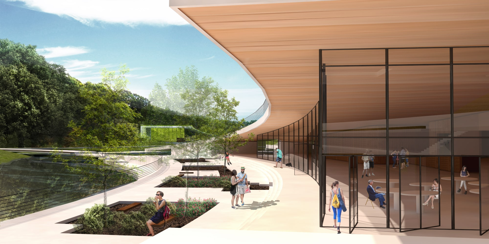
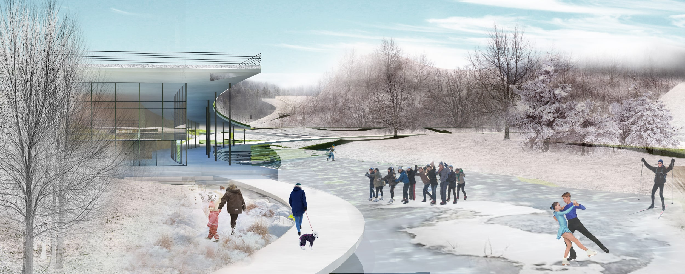

Tactical Sedimentation of Architectural Reef System
Fall 2021 - Spring 2022 | INFRAstructure Studio| Highland Park, PA | advised by Christine Mondor | in collaboration with: Claire Koh
This project aims to act as a recreational site for learning and the environ- ment. This project assumes that the animals have been freed from the High- land Park Zoo and the existing parking lot is no longer there, leaving the valley clear for design. Taking into consideration the existing reservoirs, the Sculp- ture Park collects the water from the neighborhood above at various entry points and brings the water down into the site.
Throughout the park there are different ecological conditions located on this site depending on the part of the valley it is within: wetlands, grasslands, streams, forests, etc. The site is constantly changing depending on the weather and the season conditions, which will affect the experiential aspect of the site for visitors.

Aerial Shot of Sculpture Park in Highland Park Valley.
Site Plan.
This project aims to act as a recreational site for learning and the environment.
The sculpture park is separated into four different zones that have four different conditions and experiences.
The First Zone to the south of the site is a Biosmass Wetland. Connected to this zone is a rain garden at Heth's Field, which is above the valley. This field collects the majority of the water from the neighborhood and transfers it to the wetlands with pipes. This zone is considered the wettest zone on the site since it is in the narrowest part of the valley.
The Second Zone is the outdoor sculpture park, which also houses the indoor art center. This zone has several streams that form these sculptural islands that visitors can walk on. Depending on how much water is on the site (light, heavy, or no rain) the islands can change in size, altering the experience visitors can have. This zone is partially dry and wet.
The Third Zone is the recreational field. This zone contains the learning center and the ampitheater on top of the visitor center. Since this area is made up of grasslands, it is used for more flexible outdoor activities and outdoor stage performances.
The Fourth Zone is the where the main water storage is located. It is also where the main entrance to the park is and where the main parking lot is located. This zone contains the visitor's center. The water from this water storage is collected and stored until there is an overflow of water, which will flow into an existing hill underneath the bridge at the end of the site. This water will directly go into the Allegheny River.
HARDSCAPES
Each zone is separated by dams that allow for water to overflow from one zone to another (each zone is at a different elevation from the last) and also acts as a bridge for the main circulatory path on the site for visitors. These dams are also shaped in a way that guide the water and collect them into the different water channels in each zone.

Site Data Analysis Diagrams.
Circulation and Existing Rainwater Collection in the Valley. This diagram studies the main entrance points to the site below. These are the four valley entrances and the main entrance connected to the road. The valley entrances allow for direct circulation from the upper neighborhoods to the valley below for residents of Highland Park. Each of these entrance points has a staircase that allow for people to easily access the site from different points.
Existing and Potential Ecologies on the site (household, water, dryland, forests, river, etc.). Using information about the different types of ecologies on the site and understanding how dense the population is in differing neighborhoods on different sides of the valley, it allowed for a better understanding of where entrances should be priorized on the site and what types of experiential and natural conditions should be where in the valley.
Water collection from the neighborhood into the site. An understanding of where water will enter the site when it rains and how much water from each point will be collected.
Parking Lot & Entrance Plan.
Visitor's Center Plan.

Learning Center Plan.
Indoor & Outdoor Art Center Plan.
Diagrams of different experiences scattered across the site.
The site allows for visitors to choose their own path that they want to go through on the site. However, no matter what pathway they choose, they have the opportunity to experience all the different components located on the site, such as sculpture islands, soft waterfronts, bridgewalks, ampitheater and stage performances, etc.
Parking Lot Section.
Visitor Center's Elevation.
Learning Center Section.
Learning Center Elevation.
Indoor Art Center Section.
Indoor Art Center Elevation.
Valley Section.
The architecture is integrated into the landscape. Each building hugs the edge of the landscape and actually brings it into the building when necessary. The side that hugs the landscape is where more private activities take place, depending on the building. The more open side of the building is a glass facade that allows for people to have a full view of the water that they are next to in the building. Each building also integrates a different roof condition. The visitor center and learning center have a roof that slants into the landscape and becomes a part of the landscape. This allows for people to go onto the roof and see an unobstructed view of the entire site in different perspectives. The art center's roof is split into 2 to allow for light to come into the building and hit onto the artwork. The learning center's roof is also split into 2 to allow for light to filter into the hallway that is pushed against the landscape.
<<<<<<< HEAD
Researching Precedents.
=======
>>>>>>> parent of a036816 (Temporary Update June 13 2024)

<<<<<<< HEAD
Depth Mapping Model of Coral Reef in Hanauma Bay.
=======
Sunny Day at the Visitor's Center.
Rainy Day at the Outdoor Art Center & Bridgewalk Pathway.

Snowy day at the Learning Center.
>>>>>>> parent of a036816 (Temporary Update June 13 2024)
Depending on the season and the weather conditions, the site will change how visitors use and experience the site. When there is heavy rain they will have canopy coverages that will still allow them to see how the water overflows the dams and see how small the sculpture islands become. Winter will bring the possibilities of frozen water, which will bring new pathway conditions and activities for visitors.